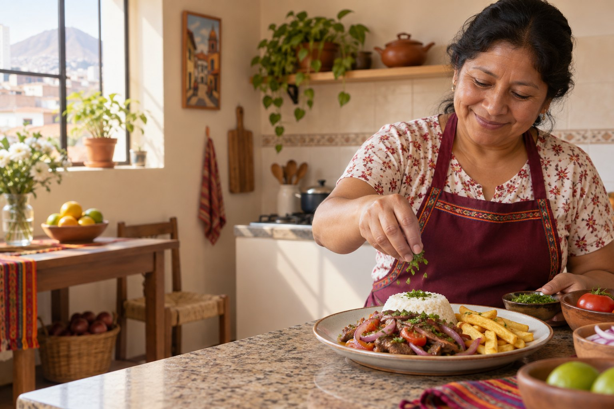

Eliges tus platos
Conversamos sobre lo que te provoca y acordamos las porciones para tu hogar.
Estamos iniciando el piloto de Mesa Criolla: una cocinera prepara comida criolla en tu hogar con los ingredientes que tú eliges y compras. Cuéntanos tu distrito y tus platos; confirmamos cobertura, porciones y precio antes de reservar.

La idea del piloto es preparar tres platos en una visita. Acordamos opciones y porciones contigo antes de cocinar.
Conversamos sobre lo que te provoca y acordamos las porciones para tu hogar.
Recibes los ingredientes y cantidades para que compres lo que prefieres.
Preparamos, porcionamos y dejamos tu cocina ordenada para que disfrutes.
Antes de reservar, conversamos contigo sobre lo que se preparará y el costo completo.
Te enviamos una lista con los productos y cantidades acordados.
Revisamos platos, porciones, cobertura y precio antes de acordar una fecha.
Preparamos y porcionamos la comida, y dejamos ordenada el área de trabajo.
Si tienes otra duda, escríbenos por WhatsApp.
Te enviamos la lista y tú compras los productos que prefieres. Así sabes qué se usará en tu comida.
Por ahora estamos probando un menú criollo corto. Cuéntanos qué te gustaría comer y confirmamos las opciones disponibles.
Lo conversamos antes de confirmar. La cocinera te indicará qué utensilios y espacio necesita para preparar el menú elegido.
La zona de atención inicial está por definirse. Envíanos tu distrito por WhatsApp y te confirmaremos si podemos atenderte.
El precio se cotiza según las preparaciones y porciones acordadas. Te confirmaremos el costo completo y la disponibilidad antes de reservar; no necesitas pagar desde esta página.
Cuéntanos tu distrito, cuántas personas comerán y qué platos te interesan. Coordinamos los detalles por WhatsApp.